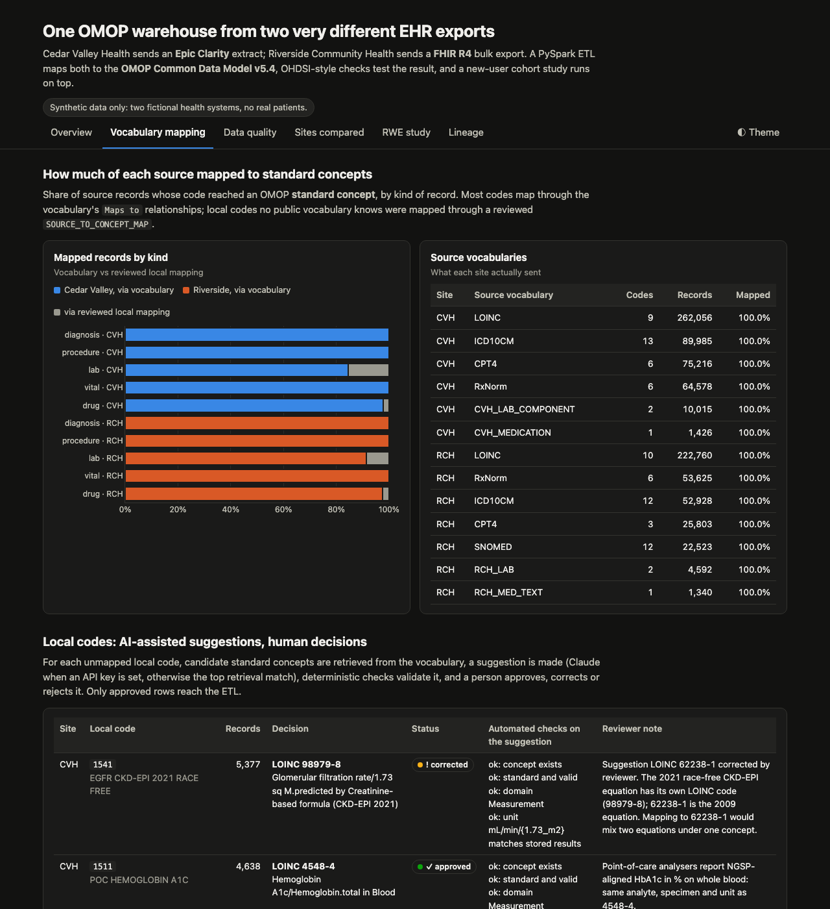

The problem
Every EHR stores data differently, so a study written for one hospital can't run at another. The OMOP Common Data Model fixes that: every site converts its data into the same tables and the same standard codes. The hard part is the conversion itself, especially when the sources are as different as an Epic Clarity extract and a FHIR export, and proving afterwards that the converted data still tells the truth.
How it works
- Two fictional health systems. One simulator writes Cedar Valley as 23 Clarity tables and Riverside as FHIR R4 NDJSON, each with a checksum manifest. Real-world quirks are planted: weight in ounces, "128/82" blood-pressure strings,
9999999lab values, a retired ICD code, IFCC HbA1c units, duplicate resources. - Spark staging. Each format is reshaped into the same five staging tables, so a third site means one new function and nothing else.
- Map to OMOP. Units are harmonised, codes follow
Maps to(one-to-many included), rows are routed by the standard concept's domain, and ids are deterministic hashes, so re-runs are stable and sites never collide. - Warehouse and quality. DuckDB holds the CDM, vocabulary and drug and condition eras. 163 checks follow the Kahn framework; duplicate keys or orphan rows stop the run before any analysis.
- Local codes, reviewed. Codes no public vocabulary knows get candidate concepts by retrieval, automatic validation, and a human decision in
SOURCE_TO_CONCEPT_MAP. - The study. Glipizide vs metformin and hypoglycemia: a new-user, active-comparator cohort in SQL, then Kaplan–Meier, Cox and IPTW, per-site estimates, and a risk model trained at one site and validated at the other.
- Orchestrate and publish. One task list drives the CLI and an Airflow 3 DAG; files can land in S3; CI runs the tests, an Airflow run and GitHub Pages.
The same diagnosis in three shapes
| Cedar Valley (Clarity) | Riverside (FHIR) | OMOP |
|---|---|---|
E11.649 T2DM with hypoglycemia | SNOMED 302866003 hypoglycemia | Two condition rows: T2DM and hypoglycemia |
| Weight row: 2,857.2 ounces | 178.6 [lb_av] | 81.0 kg from both |
ORD_NUM_VALUE 9999999, text ">14.0" | HbA1c 62 mmol/mol (IFCC) | > 14.0 % with an operator · 7.8 % |
What testing caught
A suspicious first estimate. The first hazard ratio was 2.9 against a planted 2.0. Fitting the same model to the simulator's ground truth gave 2.7, so the ETL wasn't the cause; eight larger simulations averaged 1.97, so it was sampling noise. Every run now includes that "oracle" comparison: 2.28 from the pipeline, 2.19 from the truth, and 100% agreement per patient on treatment and outcome.
A mapping that passed every automatic check and was still wrong. A local eGFR code was matched to the 2009 CKD-EPI equation; the source was the 2021 race-free equation, which has its own LOINC code. Domain and unit checks can't see that, which is why a person reviews every mapping. Four of six suggestions were corrected.
Better mapping changed the statistics. Once point-of-care HbA1c was mapped, every patient had a baseline value, the "missing HbA1c" covariate became constant, and the model failed. Constant covariates are now dropped automatically.
A bug only orchestration showed. Under Airflow, Spark's workers started a different Python than the driver. Pinning the interpreter fixed it; all 12 tasks now succeed.

Limits I'd state up front
- Synthetic data from a simple model; real feeds are messier (merged patients, time zones, late data).
- A small demo vocabulary in Athena's format with local concept ids; the code looks concepts up by code, so real vocabularies are a configuration change.
- Quality checks are modeled on OHDSI's Data Quality Dashboard; in production I'd also run the official tool against Postgres.
Tech: PySpark · DuckDB · OMOP CDM v5.4 · FHIR R4 · Airflow 3 · boto3 (S3) · lifelines · scikit-learn · pytest · GitHub Actions